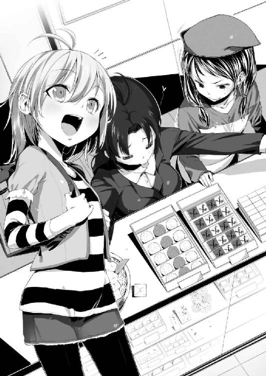
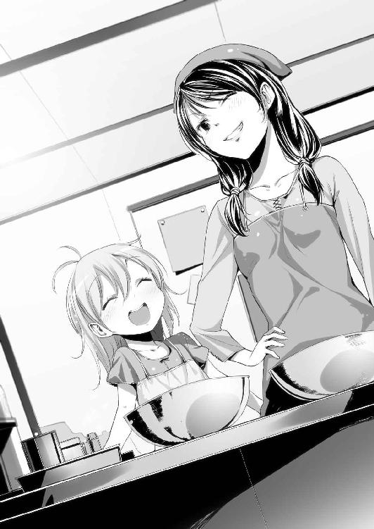

| (元)神様女と宇宙少女<電波女と青春男> (電撃文庫) | |
| 入間 人間 | |
| (2012) | |
本書（電子版）に掲載されているコンテンツ（ソフトウェア／プログラム／データ／情報を含む）の著作権およびその他の権利は、すべて株式会社アスキー・メディアワークスおよび正当な権利を有する第三者に帰属しています。
法律の定めがある場合または権利者の明示的な承諾がある場合を除き、これらのコンテンツを複製・転載、改変・編集、翻案・翻訳、放送・出版、公衆送信（送信可能化を含む）・再配信、販売・頒布、貸与等に使用することはできません。
電波女と青春男 短編 （元）神様女と宇宙少女
子供の頃、自分は宇宙人のようだった。あまりに優れているが故に。神童、という言葉の存在を知ったのは両手で歳が数えられる段階で、ああまさに私はこれだな、と納得したものだ。
それに異論を唱える人は、当時、私を妬んでいたやつらぐらいだろう。
なにをやっても完璧にこなすことができた。学問、芸術、運動。グラウンドを昼休みに少し走れば日本記録を塗り替え、鼻歌交じりに授業中に書いた作文が、いつの間にコンクールに出されていたか分からないけど入選。あまりになんでも賞を取りすぎて、天才小学生として特番を組まれて出演したこともある。そこでも天才ぶりを見せつけて、ヤラセは必要なかった。
毎日が楽しいかはさておき、周りが騒ぎ、結果として急き立てられていた印象がある。
同年代の子と遊ぶときにわざわざ手を抜くことが面倒になって、付き合いも程々に本ばかり読んでいた。どれだけ難しい大人の本も理解できて、余所の国の言葉も自然と学んでいけた。あの頃ならそれこそ、空を飛ぶことに挑戦したら宇宙の果てまで飛んでいけたかも知れない。
私にはあらゆる才能があった、というより多分だけど、『神様』の才能があった。
物事にできる、できないの概念がない。それを外側から眺めて、弄ることのできる立場。
そこにいることができる才能を、確かに持っていたのだ。
そして私という人間が開花してから一年も経過すると、その軌跡が異様に華々しすぎて、両親は私を誇るどころか段々気持ち悪がってきた。一年中咲いている花は怪しく見えるものだ。
付け足すと小学生なのに完成されすぎていることが、胡散臭さを助長したのかも知れない。
親はどちらも個人経営の内科を営んでいて、他人様と比べても優れた人間ではないと自負している。地球人の二人が宇宙人の子供を授かってしまった、とばかりに私との繋がりを感じるのは難しかったのだろう。実際、私の顔や髪は両親のどちらとも似ていなかった。その為か、父親が別にいるのではと近所が噂して、両親が喧嘩するのを見たことがある。あれはなかなか激しい喧嘩で、神様的に才能があるはずの私にも初めて、どうすることもできなかった。
両親に同調するように周囲も、私をまるで、別の星の人間を見るような目になってきていた。賞賛は控えられて、裏を探り始めようとする連中まで出てきた。つまり、どんなことがあってそんな非人間的な才能を発揮できるのかと、それが作為的ではないかと。
疑われるようになった。周りの人間も成長して、ちょっとずつ賢くなっていたのだ。
そうした視線に嫌気が差した頃、空気を読んだように私の神様の才能は失われ始めた。いっそのこと最後まであればよかったのに。中途半端に、才能に陰りが見えだしたのだ。
あらゆる記録は壁となり、入選は遠退き、世界を外側から見ることは叶わず。
中学生にもなると私の神様的な部分はすっかりなりを潜めた。いや、埋もれたのか。
あらゆる分野において早熟なだけであったことに気づいた頃、私の周りは宇宙人ばかりになっていた。どいつもこいつも、私が理解しがたいほどに才能に溢れて、活躍していた。過去の栄光からの延長で、各分野の上位が集う場所にいただけの私はあっという間に、そこから弾き出された。メッキが剥がれたわけではない。育ちきった果物を、『これでもまだ成熟する前なんです！』と売り出していたに過ぎない。いわゆる、詐欺である。
私に残ったのは部屋を埋め尽くす賞状、トロフィー、そしてこの明晰な頭脳。
頭だけは優秀と未だに自負していたが、その他は人並み以下に落ち着いて、落ちぶれて。
そんな私は今、冴えない和菓子屋の、どこにでもいるような店員をやっている。
「小牧さん、火、危ないですよ」
横から声をかけられてハッとする。シャボン玉がぱちんと割れたように、目の前が『生まれる』。ずっと目を開いていたはずなのに、見えていたものは現実ではなく、頭の内側にあるものだった。慌てて鍋の火を止める。煮詰めていたそれは少し焦げ臭くなっていた。
バイトの子を一瞥すると、なにを喋ればいいか困ったらしく、取り繕うように愛想笑いを浮かべてきた。私はそれに苦笑を返して、鍋の中身を掻き混ぜる。こんな失敗は珍しい。
宇宙人だった頃の私からすれば、考えられない。
五月。からりと小気味良い日差しがありながら、少し肌寒い日だった。風が強くて、ここへ来る途中の道でも木の葉の掠れ合う音が、雨降りのように聞こえていた。ざぁざぁと、荒れる風に撫でられた頬は濡れたように冷えて、昨日まで半袖でもいいぐらいだった気候から一転、長袖が必要になる。こういう天気のときは自分が、屋内の仕事であることを感謝する。
この職場はなんとなく選んで、面接で特技は？ と聞かれて『頭いいです』と答えたら採用された。頭いいから当然である。ちなみに直後、『すっごい頭悪い発言してみて』と無茶振りされて、三時間ぐらい悩んだ。その様子を眺めて、店長はにこやかにこう言った。
頭いい人が頭悪いこと分からないのは、なんか矛盾しているんじゃないの？
そう論破されて、以来、店長に一目置くようになった。変な人だけど。そして仕事はしない。
ちなみに、頭悪いこと言ってみてくださいと振ったら、『女々ちんきゅりっぷり☆』と満面の笑顔で言って、なるほど確かに最高に頭悪いですねと褒めたたえた。尊敬しなくてよかった。
その店長は......いない。厨房を見渡してもいないということは、サボっているのだろう。そういえば朝、『女々たん髪伸びちゃったー。ぎゃー、椅子とお尻の間に挟まった髪に引っ張られるー、ぎえぴー』とか話していた気がするから髪を切りに出かけたのかも知れない。あなたなら意志一つで好きに伸び縮みできそうじゃないですか、と言ったがにこやかに無視された。
あの人の耳が少し羨ましい。聞きたくないことを、耳を塞ぐことなく流せるなんて。
「......んー、だめだ焦げ臭い。残念だけど、作り直そう」
なんとなく甘いものが食べたくなったのでぜんざいを作っていたのだけど、片手鍋の中にある小豆その他がしっかり焦げてしまっていた。諦めて鍋の中身を捨てて、焦げを取るように洗い始める。ここは和菓子屋だが、菓子を作る場所じゃない。厨房を使っているのも私だけだ。
紅白饅頭に葬式饅頭。それと学校の入学式の記念品。そういった冠婚葬祭に関与した和菓子を販売することで生計を立てている店なので、店頭に客が来ることもあまりない。近所の、しかもお爺さんお婆さんがどこかへ出かける際の手土産を買っていくぐらいだろうか。しかもその菓子は工場から出荷されてきたものをそのまま売るだけで、店内では一切、調理しない。
申し訳程度の厨房と冷蔵庫、調理用具が奥にはあるので、せっかくだからと私は使ってみることにしている。ただ、お菓子作りは子供のとき、私が神様だったときに手をつけなかった為か、凡人以下の腕前でしかない。出がらしのような今の私では、それが精一杯。
ほんと、宇宙人的だった私はいつの間に、重力に囚われてなにもできなくなったんだろう。
これが大人になった、ということだろうか。年齢以外の意味も含めて。
「......それはそれで、いいのか」
失墜した後、両親があからさまに失望していたのは腹が立ったが。どっちだよ、と。
洗い物を終えてから、気分転換、というわけではないけど厨房から離れて店に出た。客が来るとセンサーが反応して音で分かるようになっているから、今はいないことを知っていてもだ。
和菓子の見本が並べられたショーケースの前に立つ。朝磨いたばかりのショーケースにはもう曇りが付着していた。つい指でそれを拭うと、私の指紋が上乗せされてしまった。やれやれ。
ショーケースに肘を突き、顎を支えて前屈みになる。普通の人間よりは上等な頭を持っている、と自負している私なので頭が重いのは仕方ない。頭デカイわけじゃないから。人間の頭部はボーリング玉ぐらい重いとも聞いたことあるし。だから頭デカイわけではない。
しかしそれほど頭がいいのなら、他にもっとやるべき仕事があるような気もする。大学進学してなにかを研究する道とか......とか。他に咄嗟に思いつかないけど、まぁ、なんか色々。
今日は脳細胞の調子がおかしいのか、言葉が生まれない。普段はもっと多様に、静謐に、深淵に、円明に......みたいなノリが随所に漂う思惟が飛び交っているはずなのに。
でもその普段って、いつの話と比較しているのだろう。なんだかずっと昔、ランドセルを背負っていた時代の方が私は、より多くの言葉を知っていたように思えてならない。どの国の言葉も、数式も、易々と理解できていたあの頃の方が。今では、ぜんざい作ることに失敗する。
ひょっとすると私は、頭良くないのかも知れない。いやいや、そんなことはない。
神様だった瞬間がある人間には、神様になれる資質があるはずなのだ。
だったら、元は悪くないはず。多分。などと慰めているのか言い訳しているのか、取り敢えず前向きになることは少々難しい見解に囚われていると、うぃーんと店の扉が開く。
お、客かと慌てて頬杖を取り外して背筋を伸ばすと、正面から光線が飛んできた。
水彩絵の具の水色を目に振りかけられたように、一瞬、眩む。
「うぃーん」
なんか自動扉の動く音を真似して入ってきた子は、あからさまに異様だった。髪も、目も、私の世界観からかけ離れて、物事の外側にいることを暗に示しているように、逸脱している。
水色。
そう、髪が水彩絵の具より艶やかに水色に染まり、そこから放たれる粒子が宙を漂っている。
地球上で一度も見かけたことがない色彩の女の子が、平然と店の中へ入ってきた。
なんかすげぇの来ちゃった、と目を丸くする。そうして目を大きく開いていると、その粒子が入りこんで痛むんじゃないかと危惧してしまうほど、ぺかーっと輝いている。電球かお前は。
小学生らしく、赤いランドセルを背負っている。ランドセルはまるで男子のやつみたいに傷だらけで、精巧な細工じみた見た目と裏腹に荒っぽい性格なのだろうか。その子はキョロキョロとなにかを探すように首を振っている。それが見つからなかったのか、未だに唖然としている私の前へと小走りで駆け寄ってきた。走り抜けると、その軌跡に水色の粒子が残る。
私は才能以外、見た目まで宇宙人ではないけれど、その子はあからさまに非地球産だった。
その子がちょっと背伸びするような感じに身体を伸ばし、私に向けて手を掲げる。
「こんちゃーっす」
「ちゃ、ちゃーっす」
なんか合わせてしまった。
声は短音が連なっているような印象で、甲高い。金属の筒を棒で削り続けるように。
「お母さんいますか？」
「はぁ？ お母さん、ってーと」
私の母は健在だけど、そういう話ではないだろう。バイトの子は十代なので、恐らくこの子を娘とするには想像を絶する奇跡が必要なはずだ。となると該当者は一人しかいない。
でもその一人は仕事をサボってどっか行っちゃったよ、と言いかけたところで、
「女々たんのエリたんよ」
「うわっ、ぬっと現れた」
奥から来たのか、いつの間にか私の足もとに屈んでいた店長がなんか要領を得ない紹介をする。立ち上がってすぐ気づいたのは、髪が朝より短く揃えられていたこと。やはり美容院か。
「はーいエリちゃん！ おかえりー！」
店長が今にも女の子を抱きしめるように両腕を広げて、全力で歓迎の態度を見せる。むちゅぅとか唇は既に尖って、娘に吸いつくこと前提のような顔になっている。うわ、横顔キメェ。
「あ、お母さん。いたの？」

エリちゃんこと娘がパッと笑顔になる。いますかと聞いておいて、いたのと言っちゃうか。
どうやら店長のサボり癖は娘にまで知れ渡っているらしい。いや、隠す気もないのか。
「ふふふ、エリちゃんの気配を感じて舞い戻ってきたのよ」
得意顔でただの偶然をうそぶく。でもあまり嘘に聞こえないのは、この人らしい。
「で、エリオはなしてここに？」
可愛らしさをアピールするように人差し指を頬に添えて、小首を傾げる店長。
この人は自分の娘の髪や瞳が常人離れしていても、なにも気にならないのだろうか。いや、この人自身も私が知っている三十代とは離れすぎているけど。ゴム鞠みたいに毎日、そこら中を跳ね回っている落ちつきのない人だ。なにしろ五分同じ場所に座っていると、『女々たん退屈』とか言い出すのだから。まるっきり子供である。見た目も異様に若々しいし。なんだ、母親の方も立派に妖怪めいているのだから、娘が宇宙人的でも驚くことはないか。......そうかぁ？
「んっとねー、お母さんに聞きたいことがあって」
「ほほぅ、女々ちんに。なんでも聞いていいわよー、ただし勉強のこと以外。自慢じゃねーけど女々ちん、円柱の計算方法とかもう忘れたわよ」
おいおい、と横で聞いていて呆れる。......なんだっけ？ 頭いい私も忘れた。
きっとそれは不要だから失われてしまったのだろう。さすが私、頭いい。多分。
「じゃーねー、このお菓子の中でどれが一番好き？」
娘がショーケースの中身を次々に指差す。触れるなよ、指紋つくからとその様子を見下ろしていると、店長が「そうねぇ」とショーケースを覗きこみ、ついでにべたべたと触れる。
この遠慮のなさから察するに、犯人こいつかい。白い目で横顔を見るけど、まるで効果なし。
「この中ならみたらし団子かしら、大人だし」
どういう基準だ？ 子供だとなにを選ぶというのか。
「ふぅーん。みたらしかぁ、むぅ......うんうん」
娘が一人で頷いている。時折眉根にシワが寄り、苦渋めいた顔になる。店長はニコニコと娘を見守るように、黙って見つめている。私は店長とまるで異なる視点から、娘を見下ろす。
私が小学生の頃、きっと。周囲はこれぐらい異質に、私が見えていたのだろう。
やがてなにか納得したのか、娘が笑顔となって店長を見上げる。
「そっか、分かった。じゃーさらばー」
娘がぶんぶんと元気よく手を振る。
「あら、もう帰るの？ エリたんが匂いフェチの男にハァハァされるの心配だから女々ちんがお家まで送ってあげるー、ぐぇー」
てっててーと走り出そうとする店長の髪を掴んで引き留めた。待てやオイ。
「あんたそのまま帰る気でしょ」
「よく見抜いたわねバイトちゃん」
「バイトじゃねーっつの。あんた、まだ私の名前覚えてないんですか」
じたばた、と動物園を脱走したがる猿かなにかのようにうきーうきーと鳴きながら暴れる三十代。なんなんだこの人は、そしてその娘は。常識外の親子が身近にいる事実に目眩を催しそうだ。そんな私と店長の様子をしばらく眺めていた娘はランドセルを背負い直して、笑顔。
「じゃ、おかーさんまた後でねー。ふぬゃー！」
店から出た途端、娘は全力で駆けていってしまった。元気が有り余っている感じだ。こっちの母親の方もある意味、元気いっぱいなのだけど。逃げ出すのは諦めたのか、「うぅ、エリちんがあんまりかわいいから心配だわ」と親バカ全開の一言を漏らしながらも暴れるのを止める。
私も掴んでいた髪を放すと、「切ったばっかりなのに」と店長が唇を尖らせた。子供か。
それはそれとして、とべったべたについた指紋を見下ろしながら感想を呟く。
「凄いですね、あなたの娘」
どういう意味で『凄い』かはぼかして伝えると、どう解釈したのか満面の笑顔となる。
「そうでしょー、めっちゃかわいいでしょー。やらんぞ」
「いらんですけど」
「なにおぅ！ エリたんを欲しがらないやつなど生物じゃないやい、ぷい」
ぷいってあんた、歳を考えろ。そして私が生物じゃないなら、ぷいも通用しないから。
「ていうかなんですかあの髪、地毛？」
あの歳から染めているとは、最近の子は進んでいますな。とか続けようとしたけど、店長が少々真面目な雰囲気になったので口を噤む。どこか遠い目となり、ぽつりと言う。
「父親の血を強く引いたみたいねぇ」
「へぇ。というと、旦那は外人さんですか」
「さぁ？ 国どころか、星が違うのかも」
冗談めかすようにそう答えて、店長が肩を揺する。この人が結婚していることも、そもそも私は今まで知らなかった。普段の態度が態度だし、嫁の貰い手がない人とか勝手に解釈していたけど、ひょっとすると世の男性はこういうのが好みなのかも知れない。なるほど、私がモテないわけだと密やかに納得する。神様は崇められるもので、恋の対象ではないのだ、多分。
「......しっかし」
店内に未だ、残留するその水色の粒子に目を細める。こんな人類がいていいものか。世界は広いから地球上のどこかには、鱗粉のように光の粉をまき散らす人種がいるのかも知れない。しかしそんな人たちがもし発見されたら、周囲は彼らを神様とたたえるんじゃないだろうか。
それぐらい、あの輝きは印象的だ。私たちの価値観を覆しかねない程度に。しかも今の娘は、その光に劣らないほどの美少女である点も見逃せないだろう。不公平だ、とは小学生のときに私が良く言われたことだがあの子もまた、周囲からの羨望や妬みを受けているのでは、と想像してしまう。秀ですぎるものの宿命というか。なんだか昔の私を見ているようで、ちと心配。
などとシリアス顔でいたら。
「むちゅー」
「......なんスか」
頬に吸いつかれた。店長に。顔を離すとき、ちゅぽんと音がした。頬に付着した店長の唾液がほんのりと冷たいのがやるせなく、また、他人の唇が思いの外、熱いことを知る。
言いたいことが雪崩のように溢れたけれど、どれから言い出せばいいかで苦悩してしまう。
「エリちゃんにチューし損ねたから行き場のないチューを発散しようと」
「セクハラで訴えますよ」
「もう、最近の子はすぐ横文字を使いたがるんだから」
お宅のエリちゃんは名前からして横文字じゃねぇか、と頬を吸われながら思った。
「ここにいる間は女々ちんをおねーさんと思って甘えていいのよ」
「......お母さんじゃねーのかよ」
図々しい、と半笑いで毒づいた。
神様は釣りをしている宇宙人だ、と話す女がいた。中学の同級生の話だ。
別段、宗教にはまっている女ではなく一枚の絵画から影響を受けて、そういった思想を持つように至ったらしい。はっきり言って意味不明で、私からすれば単なるおかしな女だった。
神様の才能を持っていた私が言うのだから、間違いない。私は釣りなどしなかった。
あの頃にやっていればきっと、鯨だって釣り上げられただろうに。
......あれはなんだったのだろう、と今でも考える。偶然にしてはあり得ない能力の凝縮で、明らかに住む世界が周囲と異なっていた。今となっては、その過去は夢のようでもある。
あれは、才能の発現が偏っていたのではないか。なんというか人間って、その歳になったからこその才能が、一つずつ開花していくのだと思う。だからある日突然、小説を書く才能が現れたり、絵画を想像する才能が生まれたりするのではないか。そんなことを思って、笑う。
私はその、歳月を重ねるごとに現れる才能が一カ所に固まってしまっていたのだ。なにかの手違いか、神様の悪戯か。恐らくはほぼ一生分の才能を凝り固めて、全能のものとして、短期間に燃やし尽くしてしまった。残るのは今の私のように、神様の残りカスである。
菓子屋からの帰り道、ざぁざぁと豪雨のように鳴り続ける木の葉の下で程々に憂う。
その音が次第に一つの言葉を生み出し、私に降り注ぐ。
もう一度、あの才能が欲しいかという問いかけの幻聴。
自分の内なる声の具現。
そして、私はこの問いに対してこう答える。無論、頭いいから。
菓子が上手く作れるようになるなら、それも悪くない、と。
さて翌日。昨日に引き続いて、また店長の娘がやって来た。時間としては午後三時前後なので、放課後というやつだろうか。赤いランドセルを背負って、走ってきたのか少し息が切れている。やはりちょっとした風邪や病気の類ではないらしく、今日も瞳と髪は水色に染まっていた。何度見ても、目の前にあるその色が人間らしさを遠退かせる。ほとんどエイリアンだ。
「ちゃーっす」
「ちゃちゃーっす」
ちょっと慣れた。で、娘が昨日と同じくキョロキョロ。店内に粒子が振りまかれる。
この子の髪で店内を磨けば、壁や床は永遠に輝き続けるのではないかと夢想してしまう。
「お母さんいます？」
「んー」振り向いて厨房を覗く。いない。今日はバイトの子もいないので、もぬけの殻である。
「逃げたみたい」
「おーし」
娘がガッツポーズを取る。なにがおーしなのか。私も吊られて「おーし」とか言ってみる。
「やっぱいないと思った」
「なかなかに親を理解した娘さんだこと......で、なにか用があったの？」
娘がんーんーと無邪気そうに首を振る。むぅ、愛らしい仕草。学校では男子に人気があって、女子に疎まれていると見た。でも男子の人気も、好いた惚れたとはまた違うんだろうなぁ、と察する。あくまで小学生の目線として、『綺麗なもの』に心惹かれるのだろう。
「おねーさんに用があってきたの」
「え、私？」
おねーさんとか呼ばれると昨日の店長をつい思い出してしまう。唇の感触も。嬉しくない。
「うんそう。おねーさん、お菓子作れる？」
「お菓子とな？」
「具体的にはみたらし団子一丁！ な感じ」
ヘィヘィ、と指を立てる。爪もどこか、水色に染まっているように見えるのは私の目がその粒子にやられてしまっている所為だろうか。いかん、段々と顔色まで水色に。怖い。
「団子？ 作れるけど、簡単だし」
「おぉー、できるおねーさん、ってやつだ」
拍手されてしまった。悪い気はしないけど大げさで、照れ臭い。特にこんな見た目の子に、今の自分が賞賛される構図はむず痒かった。あの頃の私が他の人を褒めているみたいで。
「ちなみに今のは、お母さんが日々言われたがっている言葉、ベストスリー」
子供になにを教えているんだ、あの人は。そして他の二つを聞くことに少し躊躇う。
「それで、できるおねーさん」
「小牧です」
「じゃあコマキさん、わたしにお団子の作り方をごキョージュしてください」
なにか物をねだるように、手のひらを差し伸べながら娘がそう頼んできた。人と話すときに背伸びするのは癖なのか、爪先立ちは昨日と変わらない。キョージュ？ ああ、教授か。
「団子？ 作りたいの？」
「うん。あのね、来月のお母さんの誕生日に、お団子作ろうと思って！」
「へぇー......」
感心した風に息を吐く。母親想いなのね、この子。私が母親の誕生日を祝うことがなくなったのはいつからだっただろう。気味悪がられた時期だったかな。あー、今でも腹立つ。
両親とはもうすっかり疎遠だが、後悔はない。和解することも、恐らくない。
「でもなんで私に？ お母さんもそれぐらいなら知ってると思うよ」
「お母さんに聞くとこのケーカクがバレちゃうし、それにわたしが台所に立つと、すっげー心配するの。包丁も握らせてくれないのさー」
短い腕を組んで、困ったものだぜと娘が呟く。ま、団子作りに包丁はいらないけど。
「ああ、なんとなく分かるわ」
昨日のあの様子だと家では死ぬほど甘やかしていそうだ。店員の給料も甘やかせよ、と笑顔のまま内心で愚痴りつつ、さてどうしたものかなと首を捻る。その純粋無垢な視線が注がれる先から顔を逸らし、客は滅多に来ないしなぁと断る理由がないことに気づきながら、悩む。
この子の見た目は正直、『完璧なもの』と表せる。だからあまり接したくない、というのが本音だ。完璧であることに対しては少々、苦い過去を持っている故に。しかし、ここで相手を傷つけずに断る方法がどうにも思いつかない。なんだか最近の私は段々、頭悪くなっている。
その頭の不具合をごまかすように、或いは嘲笑うように。ぼそぼそと口を開く。
「ここで店長の娘に好印象を与えておくと、店長の覚えもよくなるか、ぼそっ」
「おぉ、ケーサンダカイ。やっぱりできるおねーさんってやつだ」
「それはお母さんの誕生日に言ってあげなさい。それじゃあ、今から練習する？」
「うぃーっす」
娘が勢いよく挙手した。それからショーケースを回らせて、厨房の方へと案内する。娘は普段、店長が座っている椅子の上にランドセルを置いてから、まず手を洗う。洗うと爪の色が落ちるんじゃないかと見守っていたけど、当然、そんなことはない。安心するような、残念なような。この子はとにかくどこもかしこも未知に満ちていて（洒落ではない）、不安と好奇が共存している。
「キレイキレイ」
洗った手を見せつけてくる。いい加減な洗い方だと感じたけど、言及はしない。こんなに綺麗なのだから、綺麗好きじゃなくとも維持はされるのだろうと解釈する。大人になっても大した化粧はいらないんだろうなぁ、この子に羨望の眼差しを向けずにはいられない。
「準備バッチシです、シショー」
「師匠かぁ、先生の方が......まぁいいや」
この手の要求をしていては、店長と大差がない。ああいう大人になってどうする。
そもそも、自分がもう大人になったかもよく分からないのだけれど。
上新粉と白玉粉を用意する。後はタレ用に醤油と砂糖、その他。まぁ和菓子屋だからと言って特別な材料などない。そもそもご家庭で作れるものを教えなければ、意味ないので。
「はいじゃー始めますよー」
てんてけてけてけ、とスーパー投げやりに歌いながら調理開始を告げる。半袖の娘はそのぷにっとした二の腕をまくる仕草を見せてから、「ちゃーっす」と私に頭を下げる。うむ。
「まず上新粉と白玉粉にそれぞれお湯を注いで、練るべし」
「ちゃーっす」
返事、基本は全部それかい。小学生の語彙力に苦笑しながら、ボウルに粉とお湯を入れる。厨房はこの女の子には少々位置が高いので、背伸びしたまま調理するしかないようだ。
その構図は微笑ましい一方で、あからさまに外見が完璧な生き物に無理を強いているみたいで、バツが悪い。薄気味悪くもある。きっと、私もこんな風に見られていたんだ。
「あーっと......小学校、の帰りだよね」
無言でいるのが苦手なので、作業しながら世間話を振ってみる。しかし、小学生と会話する機会などそうそうない為か、どれくらいの態度で接すればいいのか掴みきれない。小学生の時分には本ばかり読んでいた弊害でもある。娘はシャカシャカと手を動かしながら、「ちゃーっす」と良い笑顔で答える。ちゃーっす以外に即席の返事がないのか、この子は。
すべてがＣ（ちゃーっす）になる的な。
「学校楽しい？」
なんか痛々しいな、と自分を客観的に評する。親戚の子に触れる感覚というか。キツイ。
「んー、イマイチ。柏木とかがちょっかい出してきて、ちょっとめんどい」
「柏木？ 男の子？」その歳から早速ラブコメかい？
「ううん、女の子。いっつも悪戯してくるから、ぼっこぼこにしてやるの」
むん、と腕を曲げて力強さをアピールしてくる。ぼっこぼこ。なんか、想像つかないな。
この子が繰り広げる取っ組み合いは、動く度に粒子が振りまかれて神聖なものに映りそう。
「ふぅん。その子はアレだね、きみがかわいいから嫉妬しちゃうんだね」
その気持ちは分かる。なにしろこの歳になっても私は、隣の子に引け目を感じてしまう。
「そーぅ？ わたしはお母さんの方がかわいいと思うけどなー」
「それはないない」
粉だらけの手を横にぶんぶん振る。そいつは洗脳ってものだぜ、お嬢ちゃん。確かに一部、本当にごく一部の好事家はアレを挙動と言動その他まるっと含めてかわいらしい生き物と認めるかも知れないけど、そんなキワモノ好きにその歳から目覚めるのはお勧めしないぜ。価値観という鉄は熱いうちに打っておかねば。
それはさておき、団子の元を混ぜ終える。
「よく混ぜた？」
「ごちゃー」
ボウルではなく真っ白になった手を見せつけてきた。まぁよし。
「次は合わせた粉をこねて......一般的には耳たぶぐらいの硬さまで、っていうわね」
「耳たぶ？ でもわたしのとお母さんので柔らかさ違うよ。お母さんのはめちゃんこ柔らかい」
「あー、分かるけど......きみの耳たぶでいいや」
店長の耳たぶを想像しながらこねる。なんか団子が美味くできない気がした。しかもあの顔を一度想像すると、いつまでもつきまとう。呪いか、あの人は。逆にこちらも呪いながら、団子をこねる。隣を横目で眺めると、娘が雑念なさそうに生地を弄っていた。
「ぐにぐに」
「一生懸命だね」
「ちぃーっす」
あ、微妙に返事が変わった。バリエーションがどれくらいあるのか、ちょっと興味あり。
「お母さんのこと、好きなんだね」
私も昔は好きだったよ。そして母親があんな人だったら......今は、どうだろう。
「ひ、み、ちゅ」
「......なにその明らかに余所から学んできた、鬱陶しい返し方」
「お母さんがよく使う言葉、ベストスリー」
スリー、と指を三本立てる。あの人の影響ばっかり受けているじゃないか、この子。将来はあんな風になるの？ 信じられん。だってそれだと逆説的に、あの人が昔はコレだったことを認めることになる。あの人も藍色の、どこか暗く冷たい粒子をほとばしらせていたのだろうか。
「団子できた？」
「でっかい耳たぶになりました」
確かに形が空豆のような形状で、丸まっていない。どういうこね方をしたのだ。
「いいけどさ。あとはこれを茹でて、団子が浮かび上がってきたらできあがりと」
「え、終わり？」
「終わり」
「もっとこう、ショクニン的なことは？」
「串に刺すとか。ああ、タレは作るけどこっちも簡単」
配合等もいい加減なので秘伝の味にはならないだろうけど、あの母親に贈るものなら十分。
そもそもこの娘が作るなら、たとえ団子にカラシが塗ってあっても食べるはず。
「なんだ、チョロいなー」
うへへ、と娘が得意げに頬を緩める。自宅で作る場合は、火を使うから危険だわーと店長が止めに入らないといいけどね。鍋を用意して、湯を沸かし、私と娘の作った団子を放りこむ。
「シショー、スゲーッス」
「いやいや、はっは」
粒子をこぼしている時点できみの方が、なにしようと凄いよと内心で呟く。この娘以上に宇宙を感じさせるものが、地球の外に行って発見できるだろうか。そんな矛盾した疑問を覚える。
娘は隣でゆらゆら、左右に揺れながら団子のできあがりを待っているみたいだけどそれも一分と経たずに飽きたのか、なんか床に伏せた。そして腕立てを始める。おいおい、急にどうした。
「なにしてるの？」
「トックンです。昨日もヒミツトックンしてないから、ちょっとしておこうと」
「特訓？」
必殺技でも打ちたいのかな、と小学生の目線に立って推測する。が、まったく違った。
「宇宙飛行士になるために、その一。体力をつける、です」
そう言って、娘はんしょんしょと身体を上下させる。体力作りだからと唐突に腕立てを始めるその奇行ぶりについては敢えて目を瞑り、語った内容だけを捉える。宇宙と来たか。
「宇宙飛行士......ああ、将来の夢ってやつ？」
大抵叶わない、小学生の夢というやつだ。娘は「そう」と頷きながら、腕立て続行。
「あ、しまったヒミツじゃなくなった。今のは聞かなかったことにしてください」
「いいけど、ヒミツにする必要あるの？」
「他の人も宇宙飛行士のトックンをしないように、ヒミツにしてないとダメなの」
微笑ましくもせこい発想だった。ていうか、目指さないよ。どういう理屈でそうなるんだ。
「うーでたーてー、うーちゅーまでー、あとー、なんかーいー」
即興の歌つきで、ふぬふぬと鼻息を荒くしながら腕立てしているその顔は、それだけ崩れているにもかかわらず美少女を保っている。神様はさぞ、この造形を気に入っているのだろう。
「宇宙飛行士ねぇ......宇宙好き？」
この町では珍しくもないけどさ。かくいう私も宇宙飛行士に憧れたことがある。もっとも私はペットボトルロケットを打ち上げるだけで満足して、才能と共に興味も引いてしまった。
「好きっていうか、夢だし。ちょー憧れてる」
「ちょーですか」
「地球でいっちゃん、わたしが宇宙を求めている自信アリ」
「そりゃまた、自信だけさし当たって地球一ですか」
苦笑する。そういう自信が私からなくなって久しい。いやほら、今の私って謙虚だし。
精々、頭いいだけの人間ですよ。最近は大分、悪くなっているけど。
それに対してこの娘は団子の作り方も知らないし、腕立ても必死。なんと羨ましいことか。
この子の内面は、才能の在り方は私と同じじゃない。つまりこの容姿は順当に、歳を重ねるごとに開花していった才能の一部でしかないのだ。不公平だよなぁ、と自嘲混じりに思う。
「きみって頭いい？」
唐突に、酷く、マヌケな質問をしてみる。腕立てを終えて立ち上がった娘が、「ん？」と顔を向ける。その頬に白い粉がついていたので、指で拭ってみると「ちゃーっす」と一礼された。
ちゃーっす。頭いいとは決して言えない日本語なのに、語感が妙にいい。
「ふっふ、これでも前回の算数のテストは百点でしたぞ」
あ、そのちょっと目を瞑って鼻を前に出す自慢顔は母親そっくりだわ、この子。親子だねー。
「ふふふ、自慢じゃないけどおねーさんも百点取ってたよ」
あの頃は百点しか取らなくて、テストがバカバカしかったものだ。テスト用紙を眺めていると、答えが透けて見えていた。カンニングですこれと訴えたくなるほど、テストが作業だった。
今の人生は何点だろうねぇ、と自問する。残念なことにもう、答えは透けていない。
「なにをー。わたしなんか、えーっと、跳び箱五段くらい飛べるし」
「張り合っても勝てないよー。おねーさん、子供の頃は神様級に凄かったから」
未だに日本記録に名前を連ねているのだ。もっとも目の前の子は奇跡を起こして世界記録でも弾き出しそうな神秘に満ちているけど。うむむ、と娘が唸り、言葉に詰まる。勝った。
「ま、今は凄くないから。バランス感覚悪いんだねぇ、一気に燃料使い切っちゃって」
「えー、凄いッスよシショー。お団子作れるし」
「でもこれで、きみも団子作れるようになったから。きみの方がすばらしい」
完璧なものに褒められると、嫌みかと勘繰ってしまう。ま、どうしてもそうなる。私はその点、周囲を褒めることはしなかった。それで余計に反感を買って、孤立したけれど。
「きみはさぁ......なんか、完璧だね」
「カンペキ？ いや全然。だから毎日、公園でヒミツトックンしてるし」
「そういうのじゃなくて......ああ、年々頭悪くなっているなぁ、語彙が消えている」
幻想が解けるように、私は馬脚めいたものを表していく。頭いいからそれぐらいは察する。
ただ言えるのは、この子の完璧さは以降も長々と継続されるだろう、ということ。
私のように一瞬だけ完璧になっても、すぐにその後に失われる。
弾道飛行で宇宙へ一瞬上がった飛行機は、しかし長い時間、無重力の世界に滞在することは叶わないものだ。そういえばそんな企画が昔あって、金持ちが参加しているというニュースを見かけた記憶がある。あの飛行機に乗った人たちは、なにを得て地球へ戻ってきたのだろう。
今の私は、見上げるといつでもそこにある天井めいたものに、どう対応すればいいのか。
「お、浮かび上がってきた。できあがりだね」
「おぉー、耳たぶ団子が浮かんでいる」
娘が感動したのか、鍋に指を入れて団子を突く。ぷかぷかと、団子が少しだけ沈む。浮き沈みがなくなった私の人生だったけど、今日は本当にわずか、浮き上がっている気もする。
神様気分の、一瞬の復活というか。この娘のおかげで。あまりに全能すぎて。
「最後にタレ作りと。混ぜるのは水、砂糖、醤油。はい復唱」
「みさし！」
「武蔵のなりそこないみたいだけど、覚えていられるならよし」
熱に強い容器に入れてチャカチャカかき混ぜて、ラップをかける。それをレンジで一分ちょい加熱する。その後に水で溶いた片栗粉を足して、更に二十秒加熱。最後に混ぜてお終い。
「これがタレの作り方だけど、覚えた？」
「みさし！」
「おい進歩してねーぞ」
いささか不安になったが、鍋から出した団子にタレをかけて、できあがり。空豆型の団子と、普通に丸い団子が共存して皿に並ぶ。現役で神様のように光り輝く子の料理とご一緒させてもらって、肩身が狭い。しかし同時に、勝ち誇った気分でもある。これが久しぶりに、私が人より優れている瞬間ではないだろうか。神様も大したことねーな、と自嘲する。
私の打ち立てた記録だって、大人と比べれば大したものじゃない。神様であっても、全能であり続けた世界はその子供の目線が限界で、ちょっと小さかった。今更、そんなことに気づく。
「うほほい、団子うほほい......ってお母さん喜ぶかな」
「きみが手作りしましたって言ったら、もっと想像を絶するリアクションを取ると思うよ」
口からビームを出すとか、巨大化して城を破壊するとか。
できあがった団子を見下ろし、それから、浮かれている娘を見る。
「あのね」
「はい、シッショー」
失笑みたいになっている。あー笑え、と受け入れつつ口を開く。
「私はきみの気持ちがちょっとだけ分かる人間なの」
「うむ？」
だからちょっとだけ、忠告なんかをしてみたくなる。残りカスなりに。
「多分、きみはこれから中学生になっても、女子に苛められると思うよ」
「苛められてないし。むしろ相手をばったばったとなぎ倒す」
とりゃとりゃ、と握り拳を突き出す。いや、そういう対応についてじゃなくて。
「きみはめだつからさ、ほら......でも、なんだ......がんばろー、おーっ」

マジで頭悪い私の応援は、最低に分かりやすかった。
いつの間に、私は頭悪い発言ができるほど、頭よくなったのだろう。
娘は団子を摘む。え、私の助言に対するコメントは、と焦る。もちゃもちゃ、と私の団子を頬張って飲み込み、「んまい」テーレッテレーと効果音が鳴りそうな具合に褒めてくる。
「シショーの教えなので、聞いておくよ。でもわたし、すっげーがんばるのは当たり前だから。だってそうしないと宇宙飛行士になれないし。夢を叶えるために生きてるんだよ、わたし」
きらきらと、二つの目玉を地球上のなによりも貴く瞬かせながら、水色娘が夢を吐く。
大きすぎるようで、この子ならば相応に抱くこともできるような、空の彼方への羨望を。
「......あーなんか、きみと話してるとむず痒いね」
「ほぇ？ なにが？ わたしカイカイ？」
ぽりぽりと鼻を掻く。貴様に私の心は永遠に分かるまい、とか言いたい。
いやむしろ、そうあるべきだ。
「神様に、私みたいな残りカスが偉そうなこと教えているみたいで......笑える」
「なんと、わたしカミサマ？ まっさかー」
わははー、と満更でもなさそうに娘が笑い飛ばす。それから自作団子の方を口に入れた。噛み出すと途端、娘の顔が「むぐ」と苦い顔になる。出来はよろしくなかったのかね。
「......来年はシショーの作ったお団子を買うことにしよーっと」
ぼそっと娘が呟く。味より、誰が作ったかの方が大事だと思うんだけど。
もう一個、私の作った方の団子を口に放り込んで、「ヒミツトックン行きまーす」とランドセルの方へ走る。大股で、二歩で椅子まで詰め寄った娘がランドセルを強く掴む。その移動の中で生まれた粒子の軌跡を、私は一歩、追いかける。肌にスッと入り込んでくるその粒子が、私を一瞬だけ空へと浮かせる......そんな錯覚を引き起こし、足下がぐらぐらと不安定に揺れた。
娘の方は、地に足をつけてただ、地面を蹴る。いつか飛び上がるために。
ちゃーっす、と武道の試合前の礼みたいに娘が恭しく頭を下げてくる。
「お団子ありがと、シショー。これでお母さんをぷぇっぷぇと泣かせちゃうよ」
「ぶぇっぶぇの方がそれっぽいけどね」
「ちゃーっした」
「......便利だなー、その挨拶」
ランドセルを背負った娘が元気よく、なんの迷いもなく駆けていく。
私はそれを、ショーケースにべたべたと指紋をつけながら、見送った。あんな風に走るだけで日本中の誰よりも速い、と信じていた私の姿を重ねて。けれど重なりきらずに、その影は日の光の中へと溶けていく。ショーケースを手で押して厨房に戻り、何度も深呼吸する。
娘の作った耳たぶ団子を口に含んで、何度も噛む。こねすぎたのか、少し歯ごたえが悪い。
「店長の耳たぶにしておくべきだったかな」
苦笑しつつ、その不完全さに憧憬を覚える。私もあれぐらい、順当に成長したかった。階段をすべて破壊して、平地にすることで頂点を水平にしてしまうのではなく。
詮無きことではあるが。それに多分、あの頃の神様である私は思ったほど、全能じゃない。
神様の才能があるだけで、錬磨してこなかった。
あの女の子みたいに、夢を持たなかった。
過去の残照に焼かれた頬は熱く、まるで涙でも流すように温い。
首筋を掻いてから、振り向かずに呼びかけた。
「隠れてないで、出てきたらどうです？」
「あら、気づいてたの」
「......っ......っ......っ」
「なに死ぬほど驚いて、腰抜けそうになってるのかしら、店員ちゃん」
「ほ、本当にいるとは思わなかったから......」
店長がいた。ヌッと裏口から出てきた、信じられない。この手の台詞は時々、暇なときに一人で呟いて格好つけているだけなのに、本当に誰かが現れてしまったのは初めてだった。
どこまでも予想の外にいる生き物である。八百万の神の一種に認定しちゃってもいいかも。
「逃げたと思ったら戻ってきたんですか」
「エリたんの匂いを感知してつい」
ついじゃねーよ。娘への溢れんばかりの愛をハードル一個超えて気持ち悪いよ。
「今日も女々たんレーダー絶好調」
ズビビビ、と人間離れしていることを自慢げにしながら電波を放出する。本当に出ていそうなので、受信しないように目を背けた。どこから娘とのやり取りを覗き見していたんだろう、と台詞の一つ一つを思い返し、恥じ入る。大人になるって、こういうことか。恥を知ることか。
意を決し、目を店長に戻すと、いつの間にか側に立っていた。店長が私の作った団子を一つ摘み、口に運ぶ。もっちゃもっちゃと、本人の頬の方が柔らかいんじゃないのかと呆れるほど顔を豊かに上下させて、団子を頬張る。なんだこの生き物、とこの親子には唖然とされる。
そして団子を呑みこみ終えて、店長がいえーぃと、先程の娘を真似るように親指を立てる。
「お菓子作るのは上手になったわね、小牧ちゃん」
「......ちゃーっす」
なるほど。
内側から上達して外を目指すのも、悪くない。
見上げればいつだって、私たちを閉じこめる壁のようなものがあって。
けれどそれを今度は突き破って、もう一度、神様に近づく毎日を始めてみよう。
この歳になった、私の才能のおもむくままに。
「......とまぁ、そういうこともあったわけ」
駄菓子屋の外にあるベンチに腰かけて、朗らかに笑い続ける女性がそう言って、コーラをぐびぐびと喉に流す。俺はそんな女性の自分語りに対して、まず言わねばならないことがある。
もの凄く根本的に、分からないことが一つあった。それは店内で無表情にぐるぐる回って粒子を振りまきながら、日誌のようなものを書いているエリオについてではなく。また、どこかで見た覚えのある白玉団子の着ぐるみを着用しながら平気な顔をしている謎もさておき。腹に『みたらし団子食べようぜ』と手書きのチラシが貼りつけてあって、宣伝しに来たのか、その話も実は団子を売りこむための創作なんじゃねえのかという疑問もなかったことにして、俺は問うわけだが。
「......あの、大変失礼ですがあなたはどちら様でしょうか」
少なくとも俺は、まったく面識がないのであった。
今日も街は平和だ。
そして最近、ちょっとだけ隣が騒がしい。
電撃文庫
（元）神様女と宇宙少女
入間人間
二〇十二年二月十日 配信
初出 電撃文庫MAGAZINE Vol.17（二〇一〇年十二月）
発行者 高野 潔
発行所 株式会社アスキー・メディアワークス
〒一〇二−八五八四 東京都千代田区富士見一−八−十九
(C)2012 HITOMA IRUMA／ASCII MEDIA WORKS イラスト／ブリキ
本書（電子版）に掲載されているコンテンツ（ソフトウェア／プログラム／データ／情報を含む）の著作権およびその他の権利は、すべて株式会社アスキー・メディアワークスおよび正当な権利を有する第三者に帰属しています。
法律の定めがある場合または権利者の明示的な承諾がある場合を除き、これらのコンテンツを複製・転載、改変・編集、翻案・翻訳、放送・出版、公衆送信（送信可能化を含む）・再配信、販売・頒布、貸与等に使用することはできません。